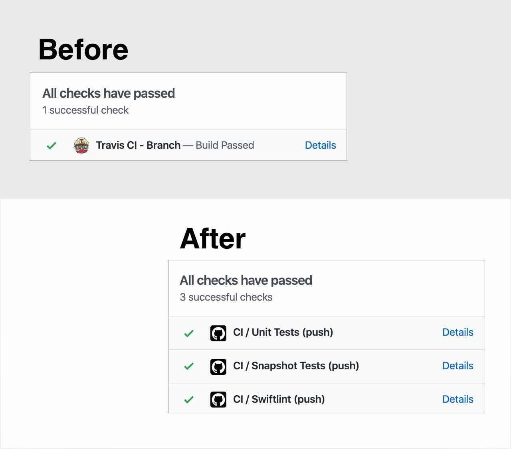

12. Jan 2020 ⋅ 4 min read
Migration from Travis CI to GitHub Actions
The last days, I migrated some of my open source repositories from Travis CI to GitHub Actions.
I only used Travis for running tests or linter, nothing too complicated.
Running Tests in iOS Repositories
Most of my .travis.yml files looked similar to the code snippet below. I want to run two commands in the CI (with fastlane):
bundle exec fastlane testbundle exec fastlane snapshot_test
language: swift
osx_image: xcode11.2
cache:
- bundler
install:
- bundle install
- pod install --repo-update
jobs:
include:
- script: bundle exec fastlane test
name: Unit Tests
- script: bundle exec fastlane snapshot_test
name: Snapshot Tests
The first lines are setup code, like specifying the Xcode version or which dependencies have to be installed.
How to migrate to GitHub Actions?
There are two steps for this:
- Add Workflow
- Delete
.travis.yml
1. Add Workflow
To migrate this to GitHub Actions, I started with tapping on the "Actions" tap in the repository.
It will create a new file for you .github/workflows/<name>.yml with a editor. On the left there is a preview of the most important documentations to understand the syntax and a link to featured marketplace actions.

This editor is helpful (sometimes), because it checks for valid syntax, but it can also be a pain. When you want to add a new line between existing code there are some autocompletion actions and it adds some syntax for you. I'm always suprised when this happens.
The following code snippet shows what you have to define when you want to have the same functionality from the Travis setup.
name: CI
on:
push:
branches:
- master
pull_request:
branches:
- master
jobs:
unit_tests:
name: Unit Tests
runs-on: macOS-latest
steps:
- name: Checkout
uses: actions/checkout@v1
- name: Install Gem Dependencies
run: bundle install
- name: Install CocoaPods Dependencies
run: pod install --repo-update
- name: Run UnitTests
run: bundle exec fastlane test
snapshot_tests:
name: Snapshot Tests
runs-on: macOS-latest
steps:
- name: Checkout
uses: actions/checkout@v1
- name: Install Gem Dependencies
run: bundle install
- name: Install CocoaPods Dependencies
run: pod install --repo-update
- name: Run SnapshotTests
run: bundle exec fastlane snapshot_test
Sadly there is nothing like a install phase (yet?), which I know from Travis or Gitlab CI. So, there is some duplicated code in here for installing the dependencies for each job. But there is a solution for it. You can create a "Install Dependency" job and the other jobs then wait for this to finish but I didn't try it out yet. I found this in the GitHub Community Forum where I discovered some useful hints and tips.
2. Delete .travis.yml
And when you have added the jobs in the new file, you can delete your .travis.yml file and you are already finished. I highly recommend to try this out in a branch 😉
Benefits from GitHub Actions
All jobs are visible
When you add a new pull request for the migration, you'll see, that all jobs are directly displayed in the pull request.
Speed
When using Travis CI, the jobs had to be in queue for some time before they started, like 5 to 10 minutes. This seems to happen instantly with GitHub Actions, I didn't wait for 30 seconds to see that the jobs have already started. So, instead of waiting ~12 minutes for all jobs to finish with Travis CI, I now wait ~4 minutes. This is such a huge difference!
Marketplace
There is a ton of community work available to use. You can browse through the marketplace and you can imagine to automate everything, you could ever think of. Maybe I'm exaggerating, but this was my first impression.
There is a repository called "Awesome Actions" where some (obviously) awesome actions are collected.
MacStadium
When running jobs with macos-latest, GitHub uses MacStadium to host the macOS runners as stated in their documentation. This also saves some time when there is no waiting time for starting virtual machines.
Additions
Run CI from forks
When you use the "Actions" tab to create a new workflow the default for the trigger is on: [push]. I thought, this is perfect for my use cases, but when someone forked the repository and creates a pull request, no CI is running automatically. So, I used on: [push, pull_request] as trigger, but then the jobs are running twice when creating a pull request. The solution is this:
on:
push:
branches:
- master
pull_request:
branches:
- master
Found in the GitHub Community Forum
Pin Xcode Version
It's also possible to pin the Xcode version. Add the following code above jobs.
env:
DEVELOPER_DIR: /Applications/Xcode_11.3.app/Contents/Developer
Found in the GitHub Community Forum
Pin macOS version
Currently, it's only possible to use the macos_latest tag to specify that you need a Mac to run your jobs. The tag currently specifies to use macOS 10.15. When you have to use another macOS version, it's not possible to specify an explicit version. But maybe the solution for this is to use self-hosted runners which sounds interesting, but also a bit overhead for these simple tasks which I need the CI for.
Migrations from repositories: